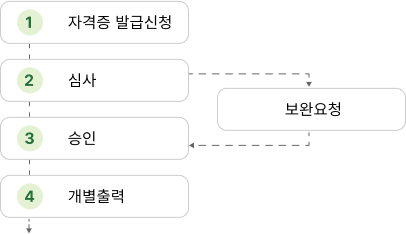

자격 (재)발급신청
자격 발급 신청안내
온라인 신청자격
안전원에 자격취득 당시 사진이 등록된 신청자
※ 주의사항
인적사항(성명, 주민번호 등)의 변경이 필요한 경우, 증빙서류(기본증명서 또는 주민등록초본)를 지참하여 가까운 시·도지부로 방문신청 하시기 바랍니다.
인적사항(성명, 주민번호 등)의 변경이 필요한 경우, 증빙서류(기본증명서 또는 주민등록초본)를 지참하여 가까운 시·도지부로 방문신청 하시기 바랍니다.
수첩형 발급

- 1. 자격 발급유형
-
안전원 시·도지부를 방문(구비서류 지참)하거나
안전원 홈페이지에서 신청(배송신청)하여
자격발급
- 발급자격 : 소방안전관리자 자격증, 위험물안전관리자 자격수첩, 위험물운송자 자격수첩, 위험물운반자 자격수첩
- 2. 자격 발급절차
-
“자격증 발급 신청 프로세스를 나타내는 이미지입니다. 이 프로세스는 다음 단계로 구성됩니다:
1. 자격증 발급 신청
2. 수수료 결재
3. 심사
• 심사 단계에서 보완 요청이 발생할 수 있습니다.
4. 승인
5. 발급
6. 발송
각 단계는 순차적으로 진행되며, 필요한 경우 보완 요청이 포함될 수 있습니다.”- 신청일로부터 7~10일 정도 소요됩니다.
- 배송기간 중 부득이 자격수첩이 필요한 경우, 자격취득확인서를 활용하시기 바랍니다
- 3. 발급 소요비용
-
발급수수료 + 배송비(등기)
발급수량별 결제금액, 발급수수료 및 배송비(등기수수료)에 대한 상세 정보를 제공합니다. 발급수량 결제금액 (발급수수료+등기수수료) 발급수수료 배송비(등기수수료) 1개 12,620 원 10,000원 2,620 원 2개 22,740 원 20,000원 2,740 원 3개 32,740 원 30,000원 2,740 원 4개 42,860 원 40,000원 2,860 원 ※ 1회 최대 4개 발급신청이 가능합니다.
상장형 발급
- 1. 자격 발급유형
-
안전원 홈페이지에서 신청하여 신청인이 직접
출력하여 자격 발급
- 발급자격 : 소방안전관리자 자격증
- 2. 자격 발급절차
-
“자격증 발급 신청 프로세스를 나타내는 이미지입니다. 이 프로세스는 다음 단계로 구성됩니다:
1. 자격증 발급 신청
2. 심사
• 심사 단계에서 보완 요청이 발생할 수 있습니다.
3. 승인
4. 개별출력
각 단계는 순차적으로 진행되며, 필요한 경우 보완 요청이 포함될 수 있습니다.”
- 3. 발급 소요비용
- 무료 (‘자격 발급(심사) 신청 내역‘ 메뉴에서 출력) 바로가기
자격 발급 신청
유의사항
- 자격 심사신청에 필요한 증명서류는 하단의 첨부서류를 참조하여 주시기 바랍니다.
- 자격증 발급을 희망하는 경우 자격심사 승인 후 별도 자격발급 신청을 하여야 합니다.
- 안전원 담당자가 접수한 이후에는 심사신청 내역 수정 및 취소가 불가능합니다.
- 안전원 심사 과정에서 사진, 증명서류 등 불분명한 경우 보완을 요청할 수 있습니다.
- 보완요청 사항에 대해서는 3일 이내에 수정하여 주시기 바랍니다. (기한 내 미수정 시 자동취소 될 수 있습니다.)
■ 보완요청사항 예시
① 사진 : 흑백, 셀카, 측면, 배경표시, 인식불가,
모자착용 사진
② 주소 : 등기우편수령이 불가능한 주소
※ 보완요청 대상 사진 및 주소 기재로 인한 불이익은 신청자에게 있습니다.
② 주소 : 등기우편수령이 불가능한 주소
※ 보완요청 대상 사진 및 주소 기재로 인한 불이익은 신청자에게 있습니다.